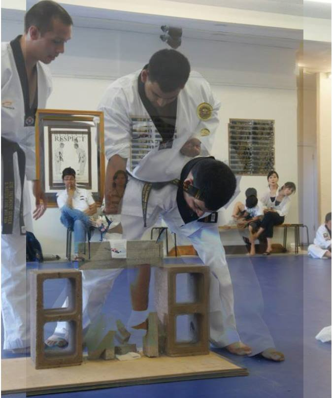
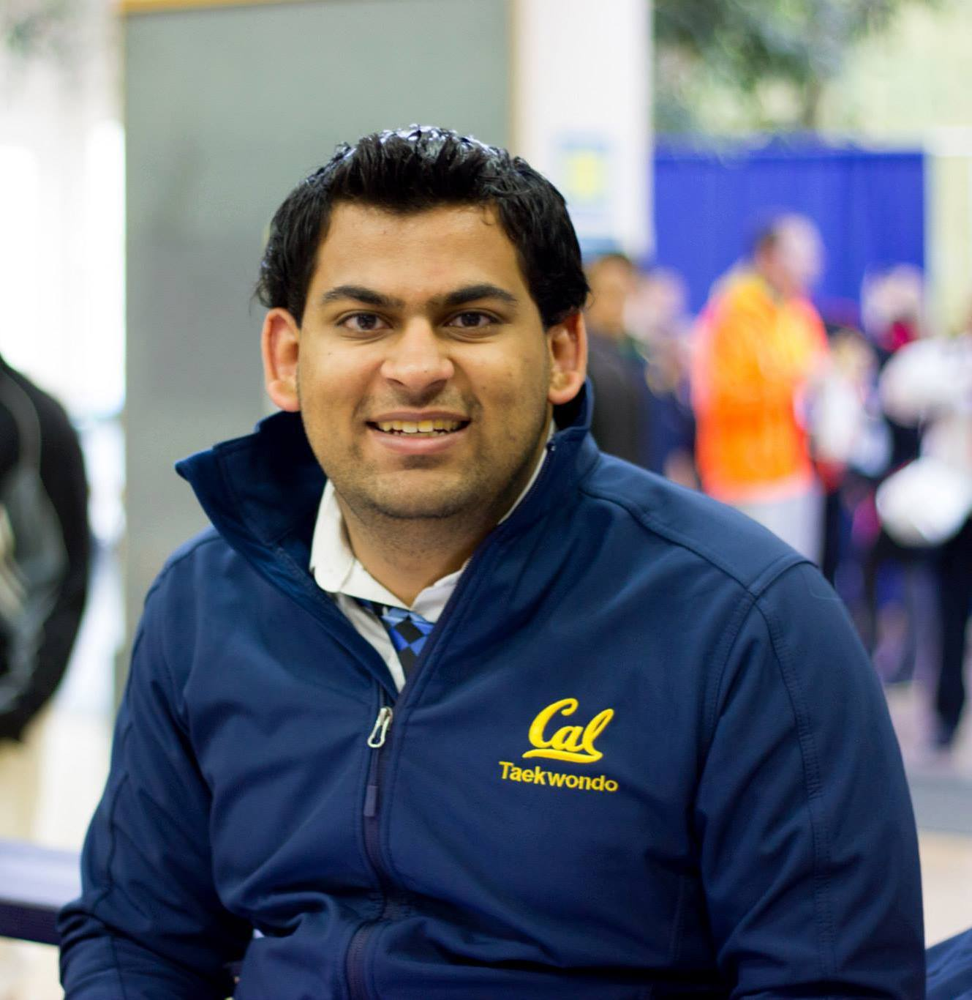

So, what is there to know about me? For starters, I was born in California, USA, while my parents are from North India. I was brought up in the heart of Silicon Valley where I currently live with my parents and my younger brother (at least when I am not going to college, so basically only summer / winter breaks). I went to schools within the Cupertino and Fremont school districts, ending with Lynbrook High School. I am currently a junior (third year) in UC Berkeley studying Computer Science (not EECS). After college, my goal is to get into animation - either in video games or movies. However, since I also love making user interfaces (UI), I am leaning more towards the video game industry where I can be a part of something that people actively interact with.
Animation. I love it and I think the people who make movies and games are amazing and god-like because of the kind of creativity and patience that has to go into making anything animated. Personally, in any animation, the things I love most are character/object design and modeling, and a little story-making as well.
I started with very simple Adobe Photoshop, editing pictures here and there, mixing them together a little, then I took a DeCal (kind of an extracircular course taught by other Berkeley students) my first semester at Berkeley. This DeCal was meant to be an introduction to Adobe Illustrator and Photoshop. I thought I knew everything about Photoshop, but after this class, I realized that I barely touched the surface of the power behind that program. Then I was also introduced to Illustrator, which at first seemed like something that would not be of interest to me because I could never properly draw by hand. However, after a couple weeks of this class, I realized just how fun Illustrator was and I became completely devoted to it (I even learned a lot of the math behind the graphics elements, which surprisingly improved my skill in using the program tools).
The next semester, I took another DeCal, this one about 3D animation using AutoDesk Maya. This one was hosted by the graphics group at Berkeley called UCBUGG. This is where I really found my calling. 3D animation was the most fun I had had since the summer between high school and college when my friends and I started ExEquals and we made our first Android app. Finally, after these two DeCals, I knew I wanted to do animation, so I looked up more things I can do and, while talking to some of the UCBUGG instructors, I found out about this class offered at Berkeley which is a year long and is all about 3D animation. I could not believe my luck - and the requirements for the course were ones that I was already taking (like Computer Graphics).
So now, with this class and the new school year, I hope to learn more about animation and be able to work with many different people with different skills so I can also develop them and become a better animator.
Tae Kwon Do. The Korean Martial Arts. The thing I almost always wanted to practice. I first tried it when I was really small (or so my parents say, around 4-5 years old). But when I tried it again in 4th grade - at the tender age of 9 - it was amazing. I earned my first black belt in 10th grade (when I was 14 years old). I was awarded my second degree in 2011 (my senior year in high school) and currently, I am a third degree - which I earned in Fall 2013. I still practice it today, being in the Berkeley Competition and Demonstration teams, and competiting in all the tournaments that I can.
I mainly do Poomsae in competitions, which is the "forms" part of Tae Kwon Do (TKD). I demonstrate a series of moves that are put together in some unique fashion (these movements are pre-determined and it is a competition of who does the form the best). The other main part of TKD is sparring, which is when you really get to fight  and kick other people. While I love doing this part of TKD as well, the risks are too great to do competitions with it as head kicks at full power are allowed and since I am considered very short (I know it's sad/amazing since I am 5 feet and 10 inches) for my weight division and the two divisions below (so losing weight is not going to help unless I want to lose over 75 pounds), head kicks on me are easy for the other competitors and may cause more injury than I want. However, I still love practicing for fun where I can have an opponent who is more my height or him/her to lighten the head kicks.
For the demo team, I hold various roles - being the biggest guy I can do brick breaking (I can break 4 with a single punch), be a wall for someone else to jump off of, or even do power breaking (where I break through 2-3 inches of wood with one kick). I am currently working on my flexibility and core muscles so I can do some of the more fancy moves that are present in many different martial arts and even dances (like kick/kip up, backflip, and handstand / cartwheel).
Something that never really occurred to me while practicing TKD and is not related to TKD: I love teaching. Teaching other people (mostly anyone, but there are a few exceptions) is one of the many joys I have. I also learned it is not limited to martial arts, but rather anything that I know and understand well enough to explain to the person. In high school I participated in the tutoring program where I was a tutor for math and science classes and I have been teaching TKD since before I got my first black belt. Now in college, I help teach one of the TKD club classes (where anyone who wants to join can join, not just Berkeley students) and I am always available to help people in need for academic classes - whether I am in them or was in them or just know the material taught in them.
I adore sleep, and I am very good at getting it. Up until and throughout 9th grade, my normal sleeping time was 9pm (no joke). 10th grade it moved to 10pm because of the 2 AP classes I was taking (Calculus BC and Computer Science). 11th grade it was 11pm and 12th grade it was... no not 12pm, it stayed 11pm. 11th grade's change was more due to me discovering online chatting and social networks like Facebook (I only got one near the end of 10th grade, and that too only because my friend paid me since he wanted some credit in a game he was playing) and Gtalk. Unforunately, in college, I was only able to maintain midnight as my average sleeping time, but it is a lot less stable and all I make sure now is I get at least 6 hours if I have to, otherwise 8 hours is the minimum. Also, I have only pulled 2 all-nighters (meaning I stayed up past 4am) doing homework throughout my life - one happening freshman year and one during sophomore year. Both were due to CS projects that were due the same time as other projects or tests I had and partly bad planning (thinking I could finish it in a week was not a good assumption).